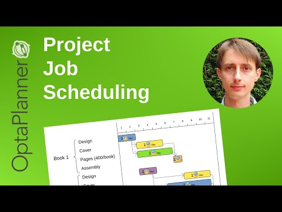

Project Job Scheduling (a form of Job Shop Scheduling)
I’ve created a new video to demonstrate the Project Job Scheduling (a form of Job Shop Scheduling) in OptaPlanner 6.0.0.CR4.
Finish projects earlier by optimizing the order (and the execution mode) of each job, to use the available resources more efficiently.
